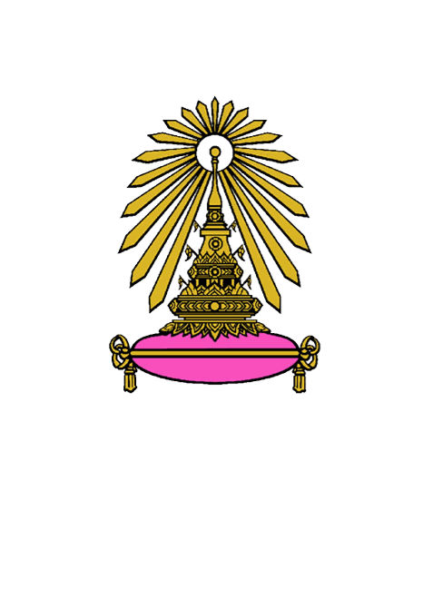
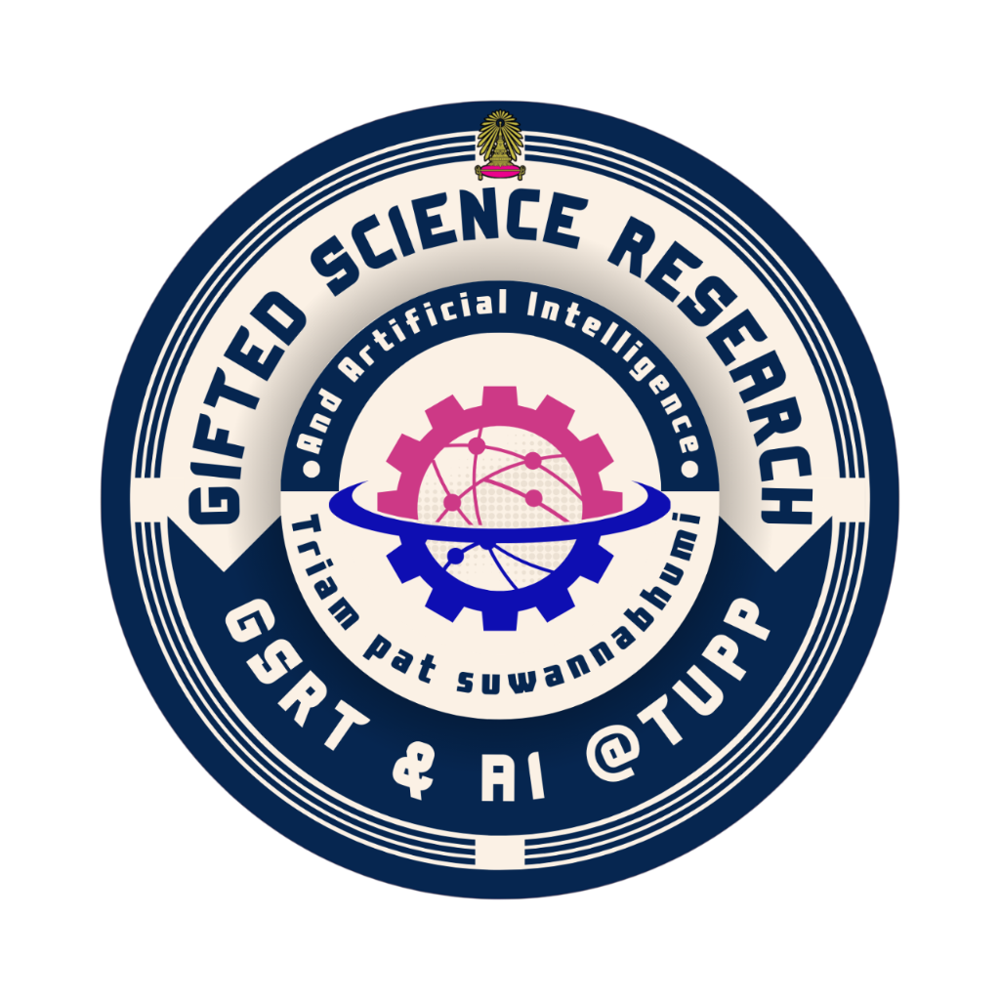

สวัสดีครับ, ผม —
ผู้หลงใหลในเทคโนโลยีปัญญาประดิษฐ์และการควบคุมหุ่นยนต์
พร้อมก้าวกระโดดสู่วิศวกรเมคคาทรอนิกส์
วศ.บ. เมคคาทรอนิกส์และออโตเมชัน • สถาบันเทคโนโลยีพระจอมเกล้าเจ้าคุณทหารลาดกระบัง (KMITL)
ผมคือ "ภู" นักเรียนมัธยมศึกษาปีที่ 5 แผนการเรียนวิทยาศาสตร์–คณิตศาสตร์และปัญญาประดิษฐ์ ที่มีความหลงใหลในวิศวกรรมเครื่องกล ไฟฟ้า และโปรแกรมมิง การได้สัมผัสเทคโนโลยี AI รวมถึงการแข่งขัน Robotics และงานช่างอิเล็กทรอนิกส์ต่างๆ ระดับประเทศ ทำให้ผมมุ่งมั่นที่จะพัฒนาตนเองสู่การเป็นวิศวกรที่พร้อมขับเคลื่อนเทคโนโลยี Autonomous Systems ระดับสากล
มัธยมศึกษาตอนปลาย • แผนการเรียน วิทยาศาสตร์ คณิตศาสตร์ และปัญญาประดิษฐ์
GPAX ล่าสุด 3.24มัธยมศึกษาตอนต้น
GPAX สะสม 3.42ประถมศึกษา
"ผมไม่ได้มองเทคโนโลยี Autonomous Systems เป็นเพียงความสะดวกสบาย แต่เป็นโจทย์ท้าทายทางวิศวกรรม ที่จะยกระดับอุตสาหกรรมและคุณภาพชีวิตผู้คน"
ด้วยโอกาสในการศึกษาในแผนการเรียนเฉพาะทางด้านปัญญาประดิษฐ์ (AI) ทำให้ผมได้สร้างรากฐานทางเทคนิคที่สำคัญ ทั้งในด้าน Software ผ่านการเขียนโปรแกรมด้วยภาษา Python และ C++ รวมถึงการพัฒนาเว็บไซต์ และในด้าน Hardware ผ่านการฝึกทักษะงานช่างอย่างการบัดกรี การต่อวงจรอิเล็กทรอนิกส์ และการควบคุมหุ่นยนต์เบื้องต้น นอกจากนี้ผมยังได้ศึกษาเทคโนโลยีขั้นสูงอย่าง Object Detection ซึ่งทำให้ผมเล็งเห็นถึงศักยภาพในการนำ AI เข้ามาเป็นส่วนหนึ่งของการควบคุมระบบเมคคาทรอนิกส์ให้มีความชาญฉลาดและแม่นยำยิ่งขึ้น
แรงบันดาลใจที่ผลักดันให้ผมเลือกเดินเส้นทางวิศวกร คือการก้าวกระโดดของเทคโนโลยียานยนต์ไฟฟ้าและระบบขับเคลื่อนอัตโนมัติ (Autonomous Systems) ผมไม่ได้มองเทคโนโลยีเหล่านี้เป็นเพียงความสะดวกสบาย แต่เป็นโจทย์ทางวิศวกรรมที่ท้าทาย ทั้งในด้านการประมวลผลเซนเซอร์ การออกแบบกลไก และการเขียนอัลกอริทึมควบคุม ผมจึงมีความปรารถนาที่จะเป็นส่วนหนึ่งของผู้พัฒนาเทคโนโลยีชิ้นนี้
เหตุผลที่ผมเลือกสมัครเข้าศึกษาต่อที่ คณะวิศวกรรมศาสตร์ สจล. เนื่องจากชื่อเสียงด้านความเป็นเลิศทางวิชาการและการปฏิบัติงานจริง ซึ่งตรงกับรูปแบบการเรียนรู้ของผมที่ชอบการทดลองและเผชิญหน้ากับโจทย์ที่ท้าทาย ผมมีความพร้อมและความมุ่งมั่นที่จะทุ่มเทให้กับการศึกษาในรั้วพระจอมเกล้าลาดกระบัง เพื่อเติบโตไปเป็นวิศวกรเมคคาทรอนิกส์ที่มีความเชี่ยวชาญในอนาคต
โครงงานสร้างและพัฒนาถุงมือแปลภาษามืออัจฉริยะเพื่อช่วยเหลือผู้พิการทางการได้ยิน ได้รับรางวัลชนะเลิศการประกวดโครงงาน OTOP ภายในโรงเรียน ประจำปีการศึกษา 2568
ออกแบบและประกอบหุ่นยนต์เข้าแข่งขันรายการ Engineering Education Robot Contest 2025 โดยความร่วมมือจากโครงการ SIET Young Innovators จนได้รับรางวัลรองชนะเลิศอันดับ 1
เทรนโมเดลปัญญาประดิษฐ์สำหรับคัดแยกและวิเคราะห์วัตถุจากรูปภาพโดยใช้ Roboflow ควบคู่กับการรันผ่าน VSCode ด้วยภาษา Python ณ โครงการ iDektep Mini Coding Challenge (ม.เกษตร)
ทดลองและเสริมสร้างทักษะการเขียนโปรแกรมควบคุมไมโครคอนโทรลเลอร์สั่งงานเซนเซอร์และฮาร์ดแวร์พื้นฐาน ผ่านบอร์ดบัสเทอร์ Raspberry Pi ณ FIBO Workshop (มจธ.)
เข้าร่วมฝึกปฏิบัติงานจริงใน K-Engineering World Tour (สจล.) ในการต่อวงจรหลอด LED ผ่าน Arduino R3 และได้เรียนรู้การบังคับหุ่นยนต์ทำแผนที่ด้วยระบบเซนเซอร์ LiDAR
ชนะเลิศการประกวดโครงงานสิ่งประดิษฐ์และนวัตกรรม "ถุงมือแปลภาษามืออัจฉริยะเพื่อผู้พิการทางการได้ยิน" ระดับโรงเรียน
2568
การแข่งขันหุ่นยนต์จากโครงการ SIET Young Innovators 2025: Engineering Education Robot Contest 2025 (ณ สจล.)
2568
เข้าร่วมอบรมหลักสูตร AI - Driven Future (ทักษะด้าน Basic IoT, Basic Python และ Microcontroller)
2568
เข้าร่วมการประกวดดนตรีวงดุริยางค์เครื่องลม (Wind Ensembles) ระดับชั้นมัธยมต้น
2566
เข้าร่วมอบรมหลักสูตร Python for AI and Digital Twin จากคณะวิศวกรรมศาสตร์ มหาวิทยาลัยเกษตรศาสตร์
2567
เรียนรู้เกี่ยวกับสายงานสถิติ การวาดกราฟรูปแบบต่างๆ ผ่าน Google Colab ด้วยภาษา Python โดยคณะวิทยาศาสตร์ สจล.
2567
เข้าร่วมค่ายฝึกอบรมและเตรียมตัวสู่เวทีพัฒนาแนวคิดเยาวชนเพื่อความยั่งยืน ณ มหาวิทยาลัยธรรมศาสตร์ ศูนย์รังสิต
2567
พร้อมช่วยเหลือ